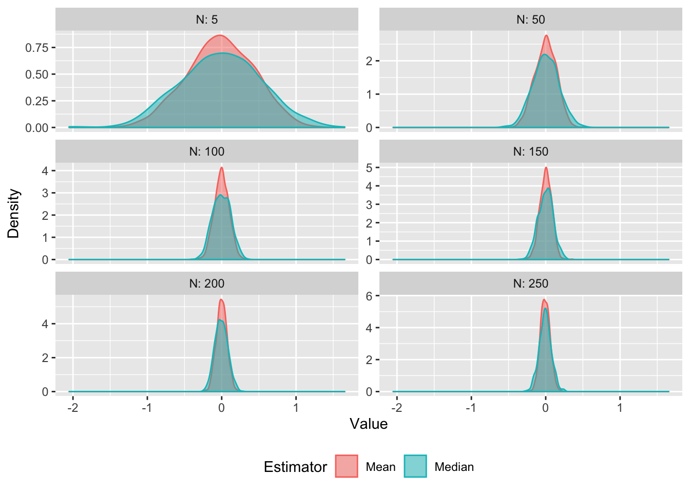

Chapter 6 Big Op and little op
6.1 Stochastic order notation
“Big Op” (big oh-pee), or in algebraic terms \(O_p\), is a shorthand means of characterising the convergence in probability of a set of random variables. It directly builds on the same sort of convergence ideas that were discussed in Chapters 5 and 6.
Big Op means that some given random variable is stochastically bounded. If we have some random variable \(X_n\) and some constant \(a_n\) (where n indexes both sets), then
\[ X_n = O_p(a_n)\] is the same as saying that \[ P(|\frac{X_n}{a_n}| > \delta) < \epsilon, \forall n > N. \] \(M \text{ and } N\) here are just finite numbers, and \(\epsilon\) is some arbitrary (small) number. In plain English, \(O_p\) means that for a large enough \(n\) there is some number (\(M\)) such that the probability that the random variable \(\frac{X_n}{a_n}\) is larger than that number is essentially zero. It is “bounded in probability” (Vaart 1998, Section 2.2).
“Little op” (litle oh-pee), or \(o_p\), refers to convergence in probability towards zero. \(X_n = o_p(1)\) is the same as saying
\[ \lim_{n\to\infty} (P|X_n| \geq \epsilon) = 0, \forall\epsilon > 0. \]
By definition of the notation, if \(X_n = o_p(a_n)\) then
\[ \frac{x_n}{a_n} = o_p(1).\]
In turn, we can therefore express \(X_n = o_p(a_n)\) as
\[ \lim_{n\to\infty} (P|\frac{X_n}{a_n}| \geq \epsilon) = 0, \forall\epsilon > 0.\] In other words, \(X_n = o_p(a_n)\) if and only if \(\frac{X_n}{a_n} \xrightarrow{p} 0\).
6.1.1 Relationship of big-O and little-o
\(O_p\) and \(o_p\) may seem quite similar, and that’s because they are! Another way to express \(X_n = O_p(a_n)\), is
\[\forall \epsilon\;\; \exists N_\epsilon,\delta_\epsilon \;\; s.t. \forall n > N_\epsilon,\;\; P(|\frac{X_n}{a_n}| \geq \delta_\epsilon) \leq \epsilon.\] This restatement makes it clear that the values of \(\delta\) and \(N\) are to be found with respect to \(\epsilon\). That is, we only have to find one value of \(N\) and \(\delta\) for each \(epsilon\), and these can differ across \(\epsilon\)’s.
Using the same notation, \(X_n = o_p(a_n)\) can be expressed as
\[\forall \epsilon,\delta\;\; \exists N_{\epsilon,\delta} \;\; s.t. \forall n > N_{\epsilon,\delta},\;\; P(|\frac{X_n}{a_n}| \geq \delta) \leq \epsilon.\] \(o_p\) is therefore a more general statement, ranging over all values of \(\epsilon\) and \(\delta\), and hence any combination of those two values. In other words, for any given pair of values for \(\epsilon\) and \(\delta\) there must be some \(N\) that satisfies the above inequality (assuming \(X_n = o_p(a_n)\)).
Note also, therefore that \(o_p(a_n)\) entails \(O_p(a_n)\), but that the inverse is not true. If for all \(\epsilon\) and \(\delta\) there is some \(N_{\epsilon,\delta}\) that satisfies the inequality, then it must be the case that for all \(\epsilon\) there exists some \(\delta\) such that the inequality also holds. But just because for some \(\delta_\epsilon\) the inequality holds, this does not mean that it will hold for all \(\delta\).
6.2 Notational shorthand and ``arithmetic" properties
Expressions like \(X_n = o_p\left(\frac{1}{\sqrt{n}}\right)\) do not contain literal identities. Big and little o are merely shorthand ways of expressing how some random variable converges (either to a bound or zero). Suppose for instance that we know \(X_n = o_p(\frac{1}{n})\). We also therefore know that \(X_n = o_p(\frac{1}{n^{0.5}})\). Analogously, think about an object accelerating at a rate of at least \(10ms^{-2}\) – that car is also accelerating at a rate at least \(5ms^{-2}\). But it’s not the case that \(o_p(\frac{1}{n}) = o_p(\frac{1}{\sqrt{n}})\). For instance a car accelerating at least as fast as \(5ms^{-2}\) is not necessarily accelerating at least as fast as \(10ms^{-2}\).
Hence, when we use stochastic order notation we should be careful to think of it as implying something rather than making the claim that some random variable or expression involving random variables equals some stochastic order.
That being said, we can note some simple implications of combining \(O_p\) and/or \(o_p\) terms, including:
\(o_p(1) + o_p(1) = o_p(1)\) – this is straightforward: two terms that both converge to zero at the same rate, collectively converge to zero at that rate. Note this is actually just an application of Continuous Mapping Theorem, since If \(X_n = o_p(1), Y_n = o_p(1)\) then \(X_n \xrightarrow{p} 0, Y_n \xrightarrow{p} 0\) then the addition of these two terms is a continuous mapping function, and therefore \(X_n + Y_n \xrightarrow{p} 0, \; \therefore X_n+Y_n = o_p(1)\).
\(O_p(1) + o_p(1) = O_p(1)\) – a term that is bounded in probability (\(O_p(1)\)) plus a term converging in probability to zero, is bounded in probability.
\(O_p(1)o_p(1) = o_p(1)\) – a bounded probability multiplied by a term that converges (in the same order) to zero itself converges to zero.
\(o_p(R) = R\times o_p(1)\) – again this is easy to see, since suppose \(X_n = o_p(R)\), then \(X_n/R = o_p(1)\), and so \(X_n = Ro_p(1)\).
Further rules, and intuitive explanations for their validity, can be found in Section 2.2 of Vaart (1998). The last rule above, however, is worth dwelling on briefly since it makes clear why we use different rate terms (\(R\)) in the little-o operator. Consider two rates \(R^{(1)} = \frac{1}{\sqrt{n}}\), \(R^{(2)} = \frac{1}{\sqrt[3]{2}}\), and some random variable \(Y_n \xrightarrow{p}0\), that is \(Y_n = o_p(1)\). Given the final rule (and remembering the equals signs should not be read literally), if \(X_n^{(1)} = o_p(R^{(1)})\), then
\[ X_n^{(1)} = \frac{1}{\sqrt{n}}\times Y_n, \] and if \(X_n^{(2)} = o_p(R^{(2)})\), then
\[ X_n^{(2)} = \frac{1}{\sqrt[3]{n}} \times Y_n. \] For each value of \(Y_n\) as \(n\) approaches infinity, \(X_n^{(1)}\) is smaller \(X_n^{(2)}\). In other words, \(X_n^{(2)}\) will converge in probably towards zero more slowly. This implication of the notation, again,
6.3 Why is this useful?7
A simple (trivial) example of this notation is to consider a sequence of random variables \(X_n\) with known \(\mathbb{E}[X_n] = X\). We can therefore decompose \(X_n = X + o_p(1)\), since we know by the Weak Law of Large Numbers that \(X_n \xrightarrow{p} X\). This is useful because, without having to introduce explicit limits into our equations, we know that with a sufficiently large \(n\), the second term of our decomposition converges to zero, and therefore we can (in a hand-wavey fashion) ignore it.
Let’s consider a more meaningful example. Suppose now that \(X_n \sim N(0,n)\). Using known features of normal distributions, we can rearrange this to
\[ \frac{X_n}{\sqrt{n}} \sim N(0,1). \] There exists some \(M\) such that the probability that a value from \(N(0,1)\) exceeds \(M\) is less than \(\epsilon > 0\), and therefore
\[ X_n = O_p(\sqrt{n}).\]
\(X_n\) is also little-op of \(n\) since
\[\begin{aligned} \frac{X_n}{n} &\sim N(0,\frac{n}{n^2})\\ &\sim N(0,\frac{1}{n})\\ \end{aligned}\]
And so we just need to prove the righthand side above is \(o_p(1)\). To do so note that:
\[\begin{aligned} P(|N(0,\frac{1}{n})|> \epsilon) &= P(\frac{1}{\sqrt{n}}|N(0,1)| > \epsilon )\\ &= P(|N(0,1)| > \sqrt{n}\epsilon) \xrightarrow{p} 0. \end{aligned}\]
The last follows since \(\sqrt{n} \to \infty\), and so the probability that the standard normal is greater than \(\infty\) decreases to zero. Hence \(X_n = o_p(n)\).
\[ \lim_{n\to\infty}P\left( \left| \frac{N(0,\frac{1}{n})}{n} \right| \geq \epsilon \right) = 0 = o_p(1), \]
for all \(\epsilon > 0\), and therefore that
\[X_n = o_p(n)\].
The big-O, little-o notation captures the complexity of the equation or, equivalently, the rate at which it converges. One way to read \(X_n = o_p(a_n)\) is that, for any multiple of \(j\), \(X_n\) converges in probability to zero at the rate determined by \(a_n\). So, for example, \(o_p(a_n^2)\) converges faster than \(o_p(a_n)\), since for some random variable \(X_n\), \(\frac{X_n}{a_n^2} < \frac{X_n}{a_n}, n > 1.\)
When we want to work out the asymptotic limits of a more complicated equation, where multiple terms are affected by the number of observations, if we have a term that converges in probability to zero at a faster rate than others then we can safely ignore that term.
6.4 Worked Example: Consistency of mean estimators
A parameter is “consistent” if it converges in probability to the true parameter as the number of observations increases. More formally, a parameter estimate \(\hat{\theta}\) is consistent if
\[ P(|\hat{\theta} - \theta| \geq \epsilon) \xrightarrow{p} 0, \] where \(\theta\) is the true parameter.
One question we can ask is how fast our consistent parameter estimate converges on the true parameter value. This is an “applied” methods problem to the extent that, as researchers seeking to make an inference about the true parameter, and confronted with potentially many ways of estimating it, we want to choose an efficient estimator i.e. one that gets to the truth quickest!
Let’s suppose we want to estimate the population mean of \(X\), i.e. \(\bar{X}\). Suppose further we have two potential estimators, the sample mean is \(\frac{1}{N}\sum_{i=1}^N X_i\) and the median is \(X_{(N+1)/2}\), where \(N = 2n + 1\) (we’ll assume an odd number of observations for the ease of calculation) and \(X\) is an ordered sequence from smallest to largest.
We know by the Central Limit Theorem that the sample mean
\[ \bar{X}_N \sim \mathcal{N}(\theta, \frac{\sigma^2}{N}), \]
and note that I use \(\mathcal{N}\) to denote the normal distribution function, to avoid confusion with the total number of observations \(N\).
Withholding the proof, the large-sample distribution of the median estimator can be expressed approximately8 as
\[ \text{Med}(X_1,X_2,...,X_N) \sim \mathcal{N}(\theta, \frac{\pi\sigma^2}{2N}). \]
How do these estimators perform in practice? Let’s first check this via Monte Carlo, by simulating draws of a standard normal distribution with various sizes of N and plotting the resulting distribution of the two estimators:
# Compute sample mean and median 1000 times, using N draws from std. normal
rep_sample <- function(N) {
sample_means <- c()
sample_medians <- c()
for (s in 1:1000) {
sample <- rnorm(N)
sample_means[s] <- mean(sample)
sample_medians[s] <- fastMedian(sample)
}
return(data.frame(N = N, Mean = sample_means, Median = sample_medians))
}
set.seed(89)
Ns <- c(5,seq(50,250, by = 50)) # A series of sample sizes
# Apply function and collect results, then pivot dataset to make plotting easier
sim_results <- do.call("rbind", lapply(Ns, FUN = function(x) rep_sample(x))) %>%
pivot_longer(-N, names_to = "Estimator", values_to = "estimate")
ggplot(sim_results, aes(x = estimate, color = Estimator, fill = Estimator)) +
facet_wrap(~N, ncol = 2, scales = "free_y", labeller = "label_both") +
geom_density(alpha = 0.5) +
labs(x = "Value", y = "Density") +
theme(legend.position = "bottom")
Here we can see that for both the mean and median sample estimators, the distribution of parameters is normally distributed around the true mean (\(\theta = 0\)). The variance of the sample mean distribution, however, shrinks faster than that of the sample median estimator. In other words, the sample mean is more “efficient” (in fact it is the most efficient estimator). Efficiency here captures what we noted mathematically above – that the rate of convergence on the true parameter (i.e. the rate at which the estimator converges on zero) is faster for the sample mean than the median.
Note that both estimators are therefore unbiased (they are centred on \(\theta\)), normally distributed, and are consistent (the sampling distributions shrink towards the true parameter as N increases), but that the variances shrinks at slightly different rates.
We can quantify this using little-o notation and the behaviour of these estimators with large-samples. First, we can define the estimation errors of the mean and median respectively as
\[ \begin{aligned} \psi_\text{Mean} &= \hat{\theta} - \theta \\ &= \mathcal{N}(\theta, \frac{\sigma^2}{N}) - \mathcal{N}(\theta,0) \\ &= \mathcal{N}(0,\frac{\sigma^2}{N}). \end{aligned} \]
Similarly,
\[ \begin{aligned} \psi_\text{Med.} &= \mathcal{N}(\theta, \frac{\pi\sigma^2}{2N}) - \mathcal{N}(\theta,0) \\ & = \mathcal{N}(0, \frac{\pi\sigma^2}{2N}). \end{aligned} \]
With both mean and median expressions, we can see that the error of the estimators is centered around zero (i.e. it is unbiased), and that the dispersion of the error around zero decreases as \(N\) increases. Given earlier discussions in this chapter, we can rearrange both to find out their rate of convergence.
For the sample mean:
\[ \begin{aligned} \psi_\text{Mean} &= \frac{1}{\sqrt{N}}\mathcal{N}(0,\sigma^2) \\ \frac{\psi_\text{Mean}}{N^{-0.5}} &= \mathcal{N}(0,\sigma^2) \end{aligned} \]
We know that for a normal distribution, there will be some \(M_\epsilon\), \(N_\epsilon\), such that \(P(|\mathcal{N}(0,\sigma^2)| \geq M_\epsilon) < \epsilon\), and hence:
\[\psi_\text{Mean} = O_p(\frac{1}{\sqrt{N}}).\] Similarly, for the sample median:
\[ \begin{aligned} \psi_\text{Med.} &= \mathcal{N}(0, \frac{\pi\sigma^2}{2N}) \\ &= \left( \frac{\pi}{2N}\right)^{0.5}\mathcal{N}(0,\sigma^2) \\ \psi_\text{Med.}/\left( \frac{\pi}{2N}\right)^{0.5} &= \mathcal{N}(0,\sigma^2)\\ \psi_\text{Med.} &= O_p\left( \left[\frac{\pi}{2N}\right]^{0.5}\right) \\ &= O_p\left(\frac{\sqrt{\pi}}{\sqrt{2N}}\right). \end{aligned} \]
Now we can see that the big-op of the sample median’s estimating error is “slower” (read: larger) than the big-op of the sample mean, meaning that the sample mean converges on the true parameter with fewer observations than the sample median.
Another, easy way to see the intuition behind this point is to note that at intermediary steps in the above rearrangements:
\[ \begin{aligned} \psi_\text{Mean} &= \frac{1}{\sqrt{N}}\mathcal{N}(0,\sigma^2) \\ \psi_\text{Med.} &= \frac{\sqrt{\pi}}{\sqrt{2N}}\mathcal{N}(0,\sigma^2), \\ \end{aligned} \] and so, for any sized sample, the estimating error of the median is larger than that of the mean. To visualise this, we can plot the estimation error as a function of \(N\) using the rates derived above:
N <- seq(0.01,100, by = 0.01)
mean_convergence <- 1/sqrt(N)
median_convergence <- sqrt(pi)/sqrt(2*N)
plot_df <- data.frame(N, Mean = mean_convergence, Median = median_convergence) %>%
pivot_longer(-N, names_to = "Estimator", values_to = "Rate")
ggplot(plot_df, aes(x = N, y = Rate, color = Estimator)) +
geom_line() +
ylim(0,1) +
theme(legend.position = "bottom")Figure 6.1: Simulated distribution of sample mean and median estimators for different sized samples.
Note that the median rate line is always above the mean line for all \(N\) (though not by much) – it therefore has a slower convergence.
References
Vaart, A. W. van der. 1998. Asymptotic Statistics. Cambridge Series in Statistical and Probabilistic Mathematics. Cambridge University Press. https://doi.org/10.1017/CBO9780511802256.
The first two examples in this section are adapted from Ashesh Rambachan’s Asymptotics Review lecture slides, from Harvard Math Camp – Econometrics 2018.↩︎
See this Wolfram MathWorld post for more information about the exact CLT distribution of sample medians.↩︎